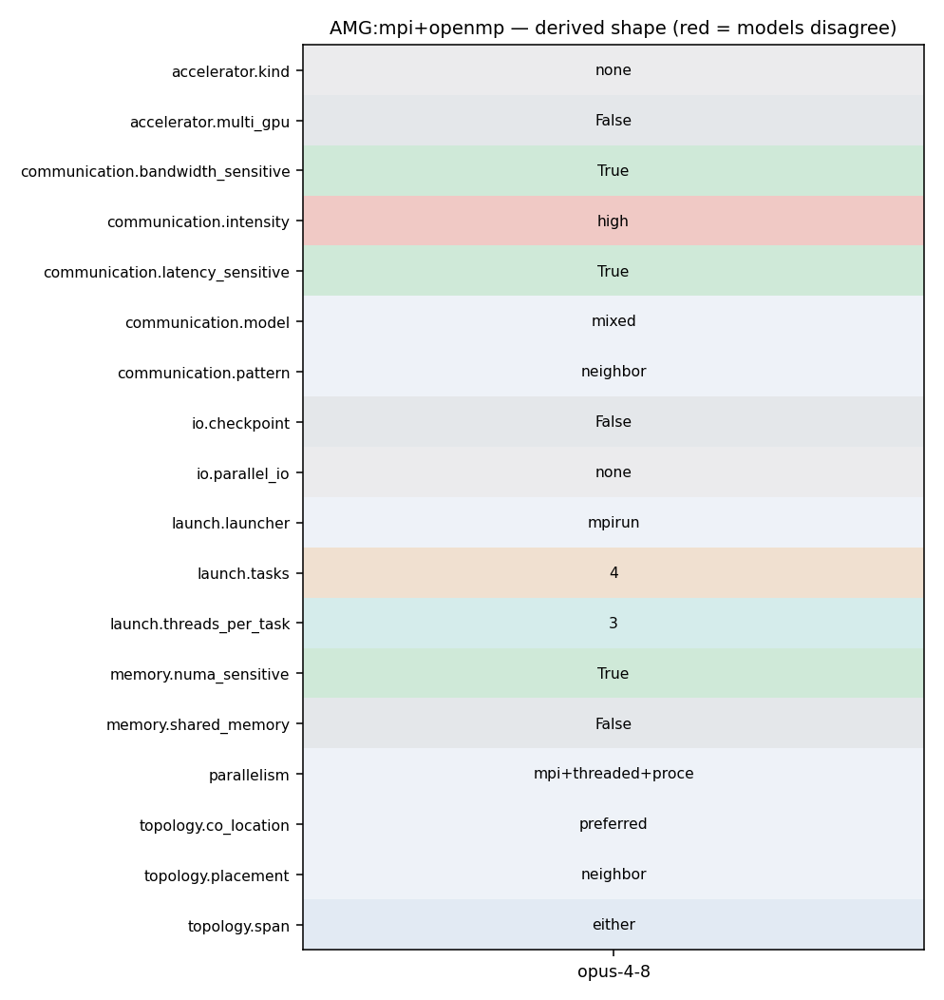

mpirun -np 4 amg -P 2 2 1 -n 50 50 50 -printstats (OMP_NUM_THREADS=3)
25 AMG is a parallel algebraic multigrid solver for linear systems arising from 26 problems on unstructured grids. The driver provided with AMG builds linear 27 systems for various 3-dimensional problems. 28 AMG is written in ISO-C. It is an SPMD code which uses MPI and OpenMP 29 threading within MPI tasks. Parallelism is achieved by data decomposition. The 30 driver provided with AMG achieves this decomposition by simply subdividing 31 driver provided with AMG achieves this decomposition by simply subdividing
25 AMG is a parallel algebraic multigrid solver for linear systems arising from 26 problems on unstructured grids. The driver provided with AMG builds linear 27 systems for various 3-dimensional problems. 28 AMG is written in ISO-C. It is an SPMD code which uses MPI and OpenMP 29 threading within MPI tasks. Parallelism is achieved by data decomposition. The 30 driver provided with AMG achieves this decomposition by simply subdividing 31 driver provided with AMG achieves this decomposition by simply subdividing
60 3 - to be able to solve problems that are larger than 2^31-1, 61 add '-DHYPRE_BIGINT' 62 4 - For additional optimizations in MPI add '-DHYPRE_USING_PERSISTENT_COMM' 63 5 - For additional optimizations in OpenMP add '-DHYPRE_HOPSCOTCH' 64 %========================================================================== 65 %========================================================================== 66
559 tmp[j++] = num_elmts; 560 } 561 562 hypre_MPI_Allgatherv(tmp,local_info,HYPRE_MPI_INT,recv_buf,info, 563 displs,HYPRE_MPI_INT,comm); 564 565 /* ----------------------------------------------------------------------
155 156 Optimization and Improvement Challenges 157 158 This code is memory-access bound. We believe it would be very difficult to 159 obtain "good" cache reuse with an optimized version of the code. 160 161 %==========================================================================
155 156 Optimization and Improvement Challenges 157 158 This code is memory-access bound. We believe it would be very difficult to 159 obtain "good" cache reuse with an optimized version of the code. 160 161 %==========================================================================
229 { 230 if (hypre_ParCSRCommHandleNumRequests(comm_handle) > 0) 231 { 232 HYPRE_Int ret = hypre_MPI_Startall(hypre_ParCSRCommHandleNumRequests(comm_handle), 233 hypre_ParCSRCommHandleRequests(comm_handle)); 234 if (hypre_MPI_SUCCESS != ret) 235 {
244 local_num_rows = hypre_CSRMatrixNumRows(diag); 245 246 local_num_nonzeros = diag_i[local_num_rows] + offd_i[local_num_rows]; 247 hypre_MPI_Allreduce(&local_num_nonzeros, &total_num_nonzeros, 1, HYPRE_MPI_INT, 248 hypre_MPI_SUM, comm); 249 hypre_ParCSRMatrixNumNonzeros(matrix) = total_num_nonzeros; 250 return hypre_error_flag;
503 /* modified Gram_Schmidt */ 504 for (j=0; j < i; j++) 505 { 506 hh[j][i-1] = (*(gmres_functions->InnerProd))(p[j],p[i]); 507 (*(gmres_functions->Axpy))(-hh[j][i-1],p[j],p[i]); 508 } 509 t = sqrt((*(gmres_functions->InnerProd))(p[i],p[i]));
316 ip = hypre_ParCSRCommPkgRecvProc(comm_pkg, i); 317 vec_start = hypre_ParCSRCommPkgRecvVecStart(comm_pkg,i); 318 vec_len = hypre_ParCSRCommPkgRecvVecStart(comm_pkg,i+1)-vec_start; 319 hypre_MPI_Irecv(&d_recv_data[vec_start], vec_len, HYPRE_MPI_COMPLEX, 320 ip, 0, comm, &requests[j++]); 321 } 322 for (i = 0; i < num_sends; i++)
244 local_num_rows = hypre_CSRMatrixNumRows(diag); 245 246 local_num_nonzeros = diag_i[local_num_rows] + offd_i[local_num_rows]; 247 hypre_MPI_Allreduce(&local_num_nonzeros, &total_num_nonzeros, 1, HYPRE_MPI_INT, 248 hypre_MPI_SUM, comm); 249 hypre_ParCSRMatrixNumNonzeros(matrix) = total_num_nonzeros; 250 return hypre_error_flag;
316 ip = hypre_ParCSRCommPkgRecvProc(comm_pkg, i); 317 vec_start = hypre_ParCSRCommPkgRecvVecStart(comm_pkg,i); 318 vec_len = hypre_ParCSRCommPkgRecvVecStart(comm_pkg,i+1)-vec_start; 319 hypre_MPI_Irecv(&d_recv_data[vec_start], vec_len, HYPRE_MPI_COMPLEX, 320 ip, 0, comm, &requests[j++]); 321 } 322 for (i = 0; i < num_sends; i++)
324 vec_start = hypre_ParCSRCommPkgSendMapStart(comm_pkg, i); 325 vec_len = hypre_ParCSRCommPkgSendMapStart(comm_pkg, i+1)-vec_start; 326 ip = hypre_ParCSRCommPkgSendProc(comm_pkg, i); 327 hypre_MPI_Isend(&d_send_data[vec_start], vec_len, HYPRE_MPI_COMPLEX, 328 ip, 0, comm, &requests[j++]); 329 } 330 break;
141 *-----------------------------------------------------------*/ 142 143 /* Initialize MPI */ 144 hypre_MPI_Init(&argc, &argv); 145 146 hypre_MPI_Comm_rank(hypre_MPI_COMM_WORLD, &myid ); 147
2259 2260 HYPRE_IJMatrixInitialize(ij_A); 2261 2262 HYPRE_IJMatrixSetOMPFlag(ij_A, 1); 2263 2264 HYPRE_IJMatrixSetValues(ij_A, local_size, num_cols, row_nums, 2265 col_nums, data);
304 ============================================= 305 RHS and Initial Guess: 306 wall clock time = 0.001849 seconds 307 wall MFLOPS = 0.000000 308 cpu clock time = 0.010000 seconds 309 cpu MFLOPS = 0.000000 310
277 -DHYPRE_USING_OPENMP -DHYPRE_HOPSCOTCH -DHYPRE_USING_PERSISTENT_COMM -DHYPRE_BIGINT 278 linking with OpenMP and setting OMP_NUM_THREADS to 3: 279 280 mpirun -np 4 amg -P 2 2 1 -n 50 50 50 -printstats 281 282 This is what AMG prints out: 283
277 -DHYPRE_USING_OPENMP -DHYPRE_HOPSCOTCH -DHYPRE_USING_PERSISTENT_COMM -DHYPRE_BIGINT 278 linking with OpenMP and setting OMP_NUM_THREADS to 3: 279 280 mpirun -np 4 amg -P 2 2 1 -n 50 50 50 -printstats 281 282 This is what AMG prints out: 283
312 HYPRE_ParCSRPCGGetPrecond got good precond 313 314 315 Num MPI tasks = 4 Num OpenMP threads = 3 316 317 318 BoomerAMG SETUP PARAMETERS:
275 276 Consider the following run, which was compiled using options -DTIMER_USE_MPI 277 -DHYPRE_USING_OPENMP -DHYPRE_HOPSCOTCH -DHYPRE_USING_PERSISTENT_COMM -DHYPRE_BIGINT 278 linking with OpenMP and setting OMP_NUM_THREADS to 3: 279 280 mpirun -np 4 amg -P 2 2 1 -n 50 50 50 -printstats 281
312 HYPRE_ParCSRPCGGetPrecond got good precond 313 314 315 Num MPI tasks = 4 Num OpenMP threads = 3 316 317 318 BoomerAMG SETUP PARAMETERS:
56 57 1 - MPI only , add '-DTIMER_USE_MPI' to the 'INCLUDE_CFLAGS' line 58 in the 'Makefile.include' file and use a valid MPI. 59 2 - OpenMP with MPI, add vendor dependent compilation flag for OMP 60 3 - to be able to solve problems that are larger than 2^31-1, 61 add '-DHYPRE_BIGINT' 62 4 - For additional optimizations in MPI add '-DHYPRE_USING_PERSISTENT_COMM'
275 276 Consider the following run, which was compiled using options -DTIMER_USE_MPI 277 -DHYPRE_USING_OPENMP -DHYPRE_HOPSCOTCH -DHYPRE_USING_PERSISTENT_COMM -DHYPRE_BIGINT 278 linking with OpenMP and setting OMP_NUM_THREADS to 3: 279 280 mpirun -np 4 amg -P 2 2 1 -n 50 50 50 -printstats 281
155 156 Optimization and Improvement Challenges 157 158 This code is memory-access bound. We believe it would be very difficult to 159 obtain "good" cache reuse with an optimized version of the code. 160 161 %==========================================================================
25 AMG is a parallel algebraic multigrid solver for linear systems arising from 26 problems on unstructured grids. The driver provided with AMG builds linear 27 systems for various 3-dimensional problems. 28 AMG is written in ISO-C. It is an SPMD code which uses MPI and OpenMP 29 threading within MPI tasks. Parallelism is achieved by data decomposition. The 30 driver provided with AMG achieves this decomposition by simply subdividing 31 driver provided with AMG achieves this decomposition by simply subdividing
141 *-----------------------------------------------------------*/ 142 143 /* Initialize MPI */ 144 hypre_MPI_Init(&argc, &argv); 145 146 hypre_MPI_Comm_rank(hypre_MPI_COMM_WORLD, &myid ); 147
312 HYPRE_ParCSRPCGGetPrecond got good precond 313 314 315 Num MPI tasks = 4 Num OpenMP threads = 3 316 317 318 BoomerAMG SETUP PARAMETERS:
244 local_num_rows = hypre_CSRMatrixNumRows(diag); 245 246 local_num_nonzeros = diag_i[local_num_rows] + offd_i[local_num_rows]; 247 hypre_MPI_Allreduce(&local_num_nonzeros, &total_num_nonzeros, 1, HYPRE_MPI_INT, 248 hypre_MPI_SUM, comm); 249 hypre_ParCSRMatrixNumNonzeros(matrix) = total_num_nonzeros; 250 return hypre_error_flag;
229 { 230 if (hypre_ParCSRCommHandleNumRequests(comm_handle) > 0) 231 { 232 HYPRE_Int ret = hypre_MPI_Startall(hypre_ParCSRCommHandleNumRequests(comm_handle), 233 hypre_ParCSRCommHandleRequests(comm_handle)); 234 if (hypre_MPI_SUCCESS != ret) 235 {
324 vec_start = hypre_ParCSRCommPkgSendMapStart(comm_pkg, i); 325 vec_len = hypre_ParCSRCommPkgSendMapStart(comm_pkg, i+1)-vec_start; 326 ip = hypre_ParCSRCommPkgSendProc(comm_pkg, i); 327 hypre_MPI_Isend(&d_send_data[vec_start], vec_len, HYPRE_MPI_COMPLEX, 328 ip, 0, comm, &requests[j++]); 329 } 330 break;
29 See the following papers for details on the algorithm and its parallel 30 implementation/performance: 31 32 Van Emden Henson and Ulrike Meier Yang, "BoomerAMG: A Parallel Algebraic 33 Multigrid Solver and Preconditioner", Appl. Num. Math. 41 (2002), 34 pp. 155-177. Also available as LLNL technical report UCRL-JC-141495. 35
165 166 Previous versions of AMG have been run on the following platforms: 167 168 BG/Q - up to over 1,000,000 MPI processes 169 BG/P - up to 125,000 MPI processes 170 and more 171
169 BG/P - up to 125,000 MPI processes 170 and more 171 172 Consider increasing both problem size and number of processors in tandem. 173 On scalable architectures, time-to-solution for AMG will initially 174 increase, then it will level off at a modest numbers of processors, 175 remaining roughly constant for larger numbers of processors. Iteration